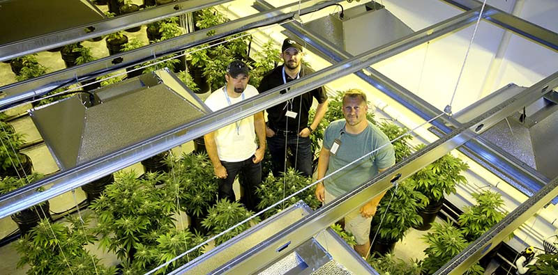

2019-07-04
人工气候室是模拟自然环境的小能手，在人工气候室中，人们通过设置，完全可以模拟出于外界环境全然不同的一种环境条件，比如说外面是冬天，人工气候室中却可以是夏天，因此在进行植物发芽、生长研究的时候，科研人员完全可以不用理会当前我们所处的地域还有环境，利用人工气候室调节所需要的环境，就可以马上开展研究试验了，非常方便和高效。
人工气候室在我们的意识中，人工气候室大多是应用在植物培养等方面，比如研究温度、湿度、风、雨、大气污染物等对植物生长发育、产量和品质的影响，为改善植物的产量、品质提供基础资料，但是实际上人工气候室的应用领域很多。因为人工气候室主要调控的是温度、湿度、光照度等环境条件，因此利用人工气候室还可以研究温度、气压、光强等对生命活动的影响(包括对人体功能的影响)，为海洋、极地和宇宙开发提供精确的科学依据。
托普云农的人工气候室不仅用于植物研究，也常用于动物研究，它可以为动物的良种选育提供适宜的环境条件，另外人工气候室还常用于研究生物的病虫害防治、加速生物的世代繁育、进行动植物的生产性试验等，而随着社会的发展和科学技术的进步，专用型的人工气候室越来越多，人工气候室的控制条件、自动化程度和精度也越来越高，因此将其用于不同的科学试验中，也往往能够发挥明显的作用和效果，因此在未来，针对于生命科学研究，人工气候室会向着专用型和小型化方向发展，而针对于最优化生产，则会向着大型化方向发展。

人工气候室是模拟自然环境的小能手，在人工气候室中，人们通过设置，完全可以模拟出于外界环境全然不同的一种环境条件，比如说外面是冬天，人工气候室中却可以是夏天，因此在进行植物发芽、生长研究的时候，科研人员完全可以不用理会当前我们所处的地域还有环境，利用人工气候室调节所需要的环境，就可以马上开展研究试验了，非常方便和高效。
人工气候室在我们的意识中，人工气候室大多是应用在植物培养等方面，比如研究温度、湿度、风、雨、大气污染物等对植物生长发育、产量和品质的影响，为改善植物的产量、品质提供基础资料，但是实际上人工气候室的应用领域很多。因为人工气候室主要调